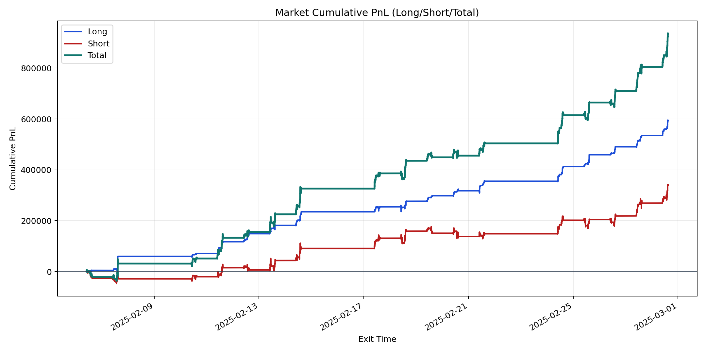
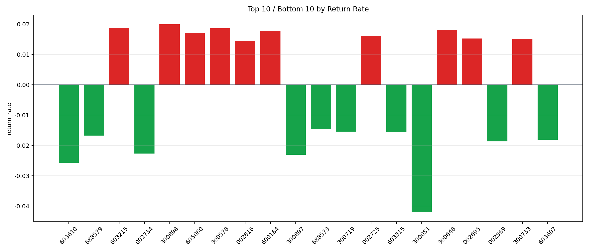

| repo_root | /home/haoranyou/data/output/alpha0.4_1w_5s_3ticks |
|---|---|
| period_months | 1 |
| period_label | 2025-02-06_to_2025-02-28 |
| start_time | 2025-02-06 09:50:22 |
| end_time | 2025-02-28 15:00:00 |
| n_trades | 126853 |
| n_symbols | 1269 |
| total_pnl | 934628.5252000001 |
| long_total_pnl | 594765.5190999997 |
| short_total_pnl | 339863.0061000004 |
| total_entry_notional | 1175045374.0 |
| long_entry_notional | 269057039.0 |
| short_entry_notional | 905988335.0 |
| total_return_rate | 0.0007953978168676234 |
| long_return_rate | 0.002210555506410667 |
| short_return_rate | 0.0003751295606913089 |
| top_symbols_by_return | ["300898", "603215", "300578", "300648", "600184", "605060", "002725", "002695", "300733", "002816"] |
| bottom_symbols_by_return | ["300051", "603610", "300897", "002734", "002569", "603607", "688579", "603315", "300719", "688573"] |

